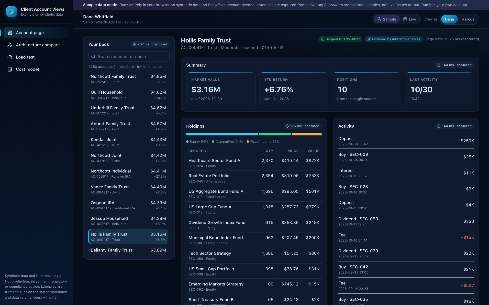
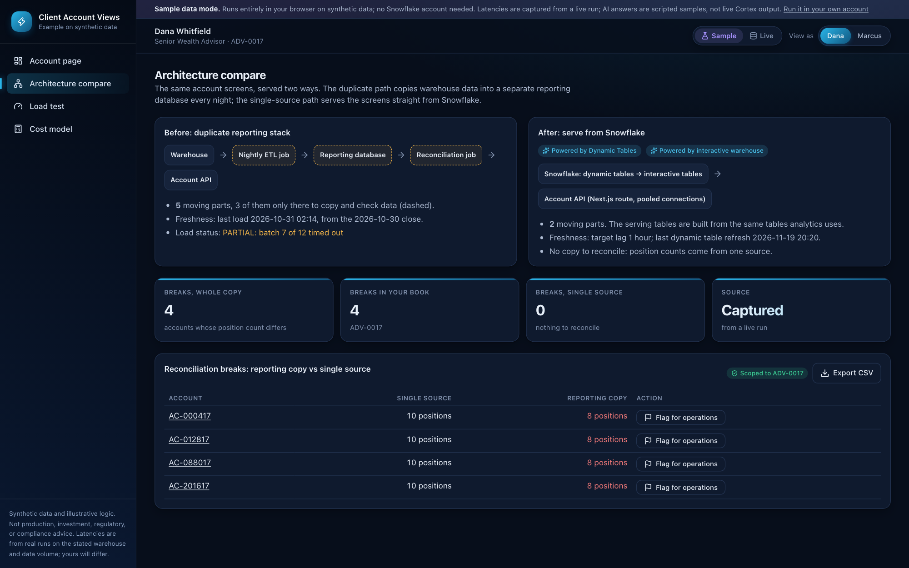
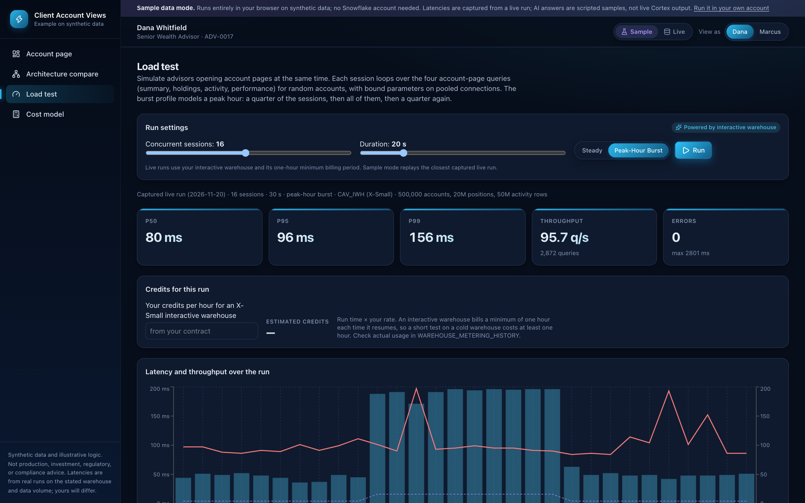
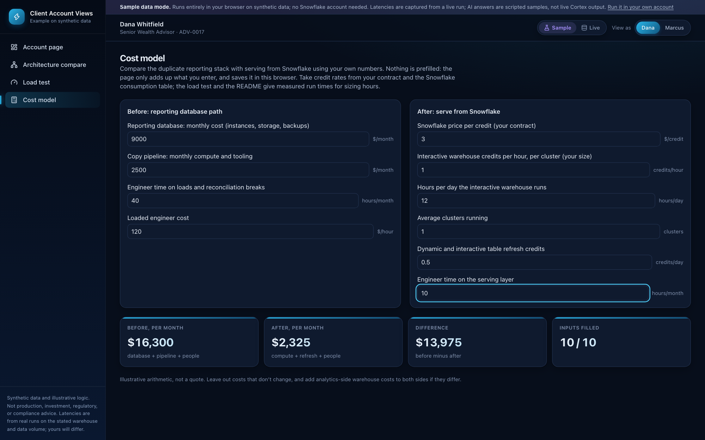
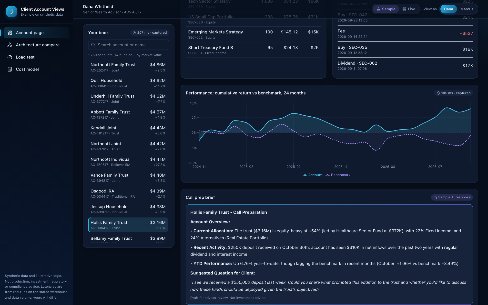

Serve account pages straight from your analytics data, without a second reporting database
Many firms copy positions and activity from the warehouse into a separate relational database every night, just to power fast account screens in their advisor platform. That means two pipelines, two bills, and reconciliation breaks when a load fails. This example serves the same account summary, holdings, activity, and performance views directly from Snowflake interactive tables, shows the break the copy would have caused, and lets you measure latency under concurrency and model cost with your own numbers.
Synthetic data, illustrative logic. Every advisor, household, account, and fund is fictional. This is not production, investment, regulatory, or compliance advice. Latencies come from real runs on the stated warehouse and data volume; yours will differ.
Who it's for
Advisors
Open a client's account page and see summary, holdings, activity, and performance load quickly, with a call prep brief on demand.
Platform engineers
Own the account API and its latency targets. Run concurrent sessions and read p50, p95, and p99 latency.
Data platform owners
Compare one source of truth with a duplicate reporting stack, and fill in the cost model with your own numbers.
Walkthrough
Screenshots of the running app in no-account mode. Every number comes from the synthetic data and a captured live run on an XSMALL interactive warehouse with 500,000 accounts.





How it works
| Step | Snowflake capability | What it does here |
|---|---|---|
| Build serving tables | Dynamic Tables | Current holdings and a one-row account summary are built from 20M positions, 50M activity rows, and 12M monthly returns, with a 1-hour target lag. |
| Serve at low latency | Interactive tables and interactive warehouses | Four interactive tables clustered on advisor and account, refreshed automatically, kept warm by an XSMALL interactive warehouse with a standard fallback warehouse. |
| Account API | Next.js routes + snowflake-sdk | A connection pool, key-pair auth, and bound parameters. Every query binds the advisor ID, so each advisor reads only their own book. |
| Call prep brief | AI_COMPLETE | Summarizes the account's rows on the standard warehouse for advisor review. |
Get started
No-account mode
git clone https://github.com/sfc-gh-ooral/sfguide-client-account-views.git
cd sfguide-client-account-views
npm install && npm run devLive mode
- Run
sql/setup.sqlin a Snowsight worksheet as ACCOUNTADMIN, in a region where interactive warehouses are available. - Copy
.env.exampleto.env.localand set key-pair auth. npm run dev, then switch the header to Live.- When done, run
sql/cleanup.sql.
Full steps, objects created, and costs are in the README.
Limits and disclaimer
- Latency includes the network between the app server and Snowflake. The captured runs used a laptop client and an XSMALL interactive warehouse with one cluster; production servers near your Snowflake region will measure differently.
- An interactive warehouse bills at least one hour each time it resumes, and its minimum auto-suspend is one hour.
- The reconciliation break and the large deposit are planted stories on this synthetic data set.
- Advisor scoping is enforced in the API with bound parameters. For defense in depth, add a row access policy on the interactive tables.
- The cost model does arithmetic on your inputs only; it makes no savings claim.
This is an illustrative example provided as is. It is not an official Snowflake product, it isn't supported by Snowflake Support, and it contains no customer data. Apache 2.0 license.